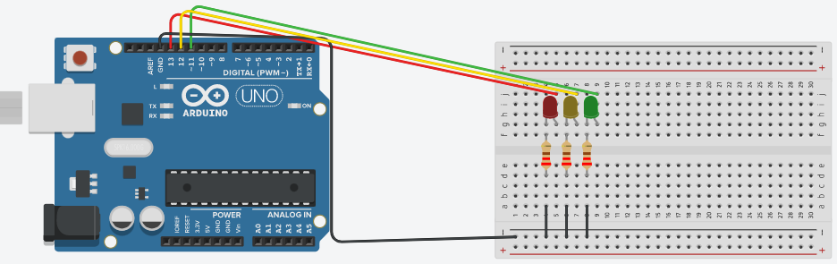
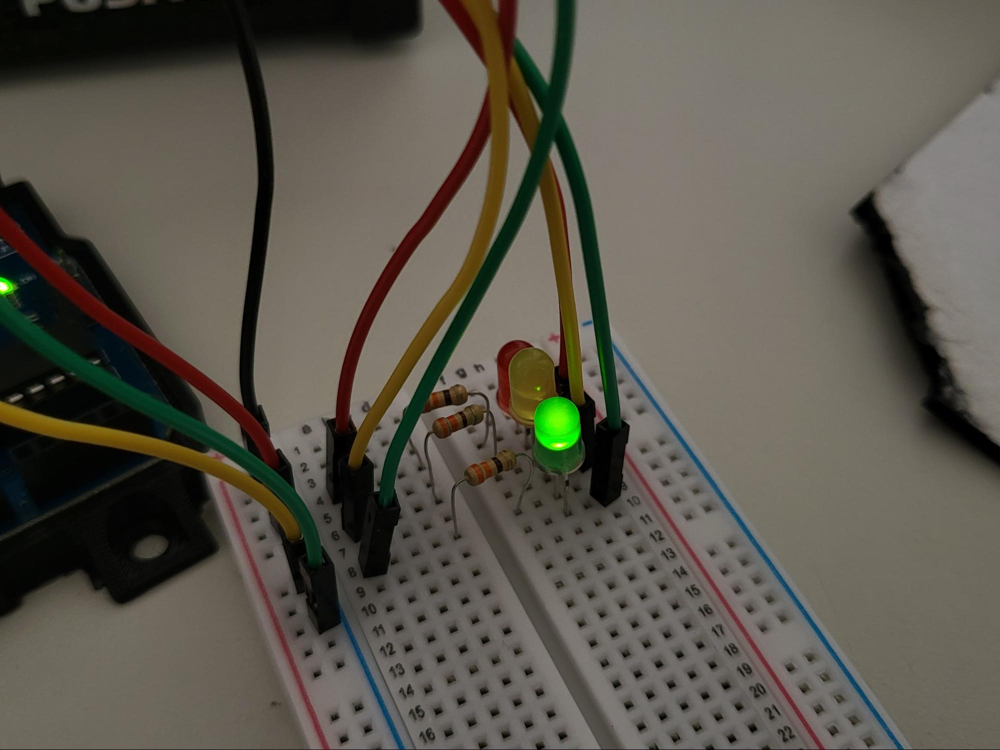

Colégio Estadual do Paraná - Ensino Fundamental, Médio e Profissional
Colégio Estadual do Paraná - Ensino Fundamental, Médio e Profissional
Projeto: Sinaleiro
Componentes: Angeli Fiorese n°05, Luiz Vinícius n°26, Leonardo Lech n°24, Kauã Cassel n°
Turma: 2° Q
Título do Projeto: CEP
bjetivo(s) do Projeto: Desenvolvimento de um site com o tema do colégio.
Material e Métodos: Leds de 3 cores, resistores, cabos macho, placa de ensaio, Arduino e a plataforma Tinkercad.
Projeto:
// C++ code
//
void setup()
{
pinMode(13, OUTPUT);
pinMode(12, OUTPUT);
pinMode(11, OUTPUT);
}
void loop()
{
digitalWrite(13, HIGH);
digitalWrite(12, LOW);
digitalWrite(11, LOW);
delay(5000); // Wait for 5000 millisecond(s)
digitalWrite(13, LOW);
digitalWrite(12, HIGH);
digitalWrite(11, LOW);
delay(2000); // Wait for 2000 millisecond(s)
digitalWrite(13, LOW);
digitalWrite(12, LOW);
digitalWrite(11, HIGH);
delay(3000); // Wait for 3000 millisecond(s)}

Sinaleiro funcionando:
